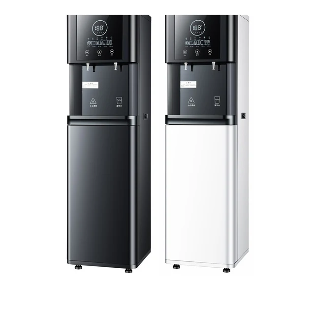

PDF · 24 · B2B
Tải danh mục sản phẩm
Yêu cầu danh mục sản phẩm hệ thống RO thương mại và hệ thống bán nước RO tự động để xem thông số kỹ thuật, các tùy chọn cấu hình và lập kế hoạch OEM/ODM.
Tải danh mục sản phẩm
Yêu cầu về cấu hình
Tải danh mục sản phẩm
PDF · RO · OEM/ODM
Hệ thống thanh toán: Tùy chọn